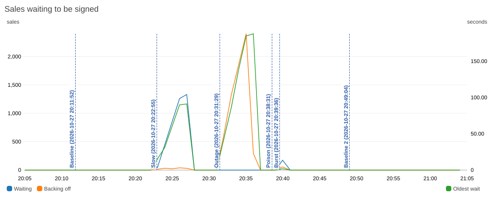
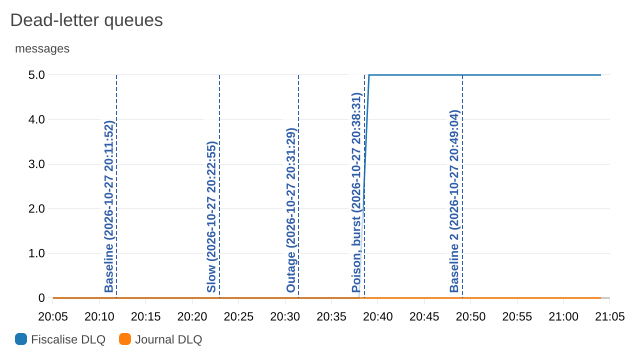
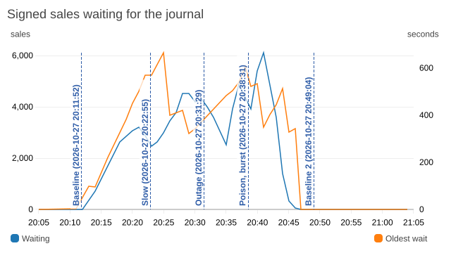
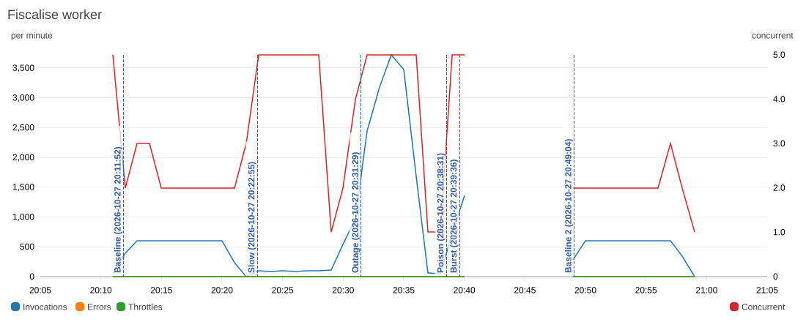
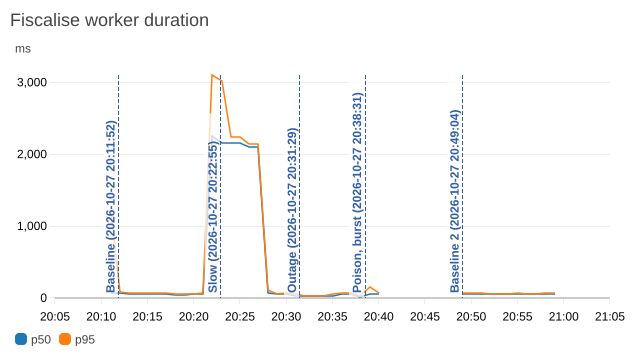
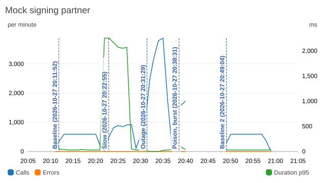
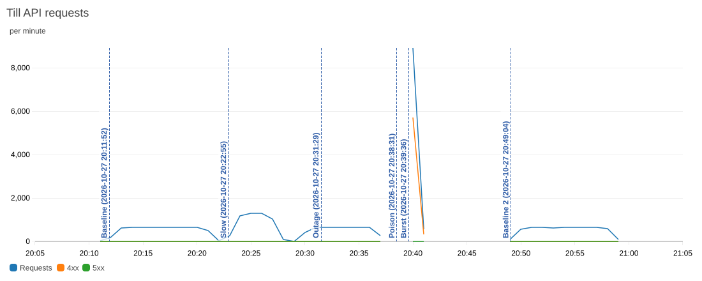
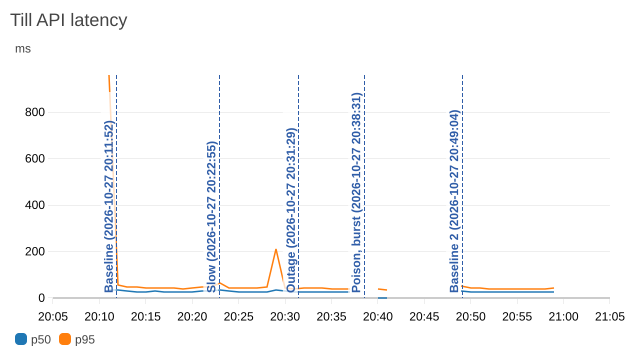
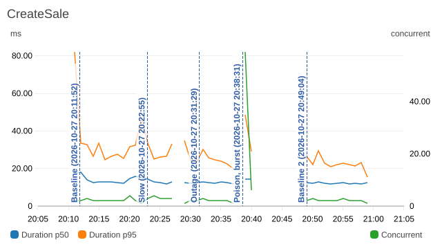

Fiscal till pipeline
Fiscal receipts for venue tills in France, Germany and Austria. A till posts a sale; it is stored once however often the till retries, sent with its market's fiscal payload to a signing partner (a mock here), and given a gapless receipt number per till.
C# on .NET 10 with AWS Lambda, API Gateway, SQS, DynamoDB, S3 and SES; SQL Server for the journal; infrastructure in CDK for C#; an Angular till. Six load and failure drills on AWS put 23,223 sales through it. Afterwards a check of DynamoDB against the SQL journal and k6's counts, across all 23,277 stored sales, found none lost or duplicated and no gap in any till's receipt numbers.
How a sale moves
- The till posts the sale with its venue's API key and an
Idempotency-Key. CreateSale stores it with a conditional put on an id derived from the venue and key, queues it, and answers 202. The till measured about 100 ms, most of it network. - FiscaliseWorker takes sales off the fiscalise queue and has the signing partner sign each one. A partner outage leaves the sale on the queue, retried with backoff.
- The journal worker takes each till's sales one at a time from a FIFO queue. SQL Server gives each sale the till's next receipt number in the transaction that records it.
- The receipt is written to S3 and emailed when the customer gave an address. The till polls until the receipt number arrives.
The drills
A script drove each drill from the laptop: k6 for load, a switch in SSM Parameter Store to make the mock partner slow or unavailable, and bad messages sent straight to the queue. Afterwards a check compared DynamoDB with the SQL journal sale by sale, and with k6's accepted count per run.
| Drill | Load | Accepted | p95 at the till | Result |
|---|---|---|---|---|
| Baseline | Up to 10 sales/s for 10 min, 7% resent | 5,429 | 179 ms | All 381 resends got the original sale back. |
| Slow partner | Partner answers in 2 s, up to 20 sales/s | 4,829 | 155 ms | Signing fell behind: 89 s at p95, 107 s at most. The API was unaffected. |
| Partner outage | Partner returns 503 for 4 of 8 minutes | 4,229 | 136 ms | Every sale made during the outage was signed within 300 s. |
| Poison messages | 5 malformed or unknown-sale messages | All 5 in the dead-letter queue within 4 s; the alarm emailed about 3 minutes later. | ||
| Burst | One venue at 150 requests/s against its 50/s limit | 3,306 | 123 ms, with the 429s | 6,041 requests got 429; the other venues got 241 of 241 through. |
| Baseline again | As the first, journal worker at 16 consumers | 5,430 | 141 ms | Receipt number 0.49 s after the sale (p95). |
The dashboard during the drills
CloudWatch, 20:05 to 21:05 UTC on 27 October 2026. Each dashed line marks when a drill started. The Outage line marks the partner going down, two minutes into that drill's load, and on the smaller graphs one line marks Poison and Burst, which started a minute apart.
Queues






Workers






Till API






Retries on the fiscalise queue
A failed signing hides the sale on the queue for 5, 10, 20, 40, then 60 s, each up to 20% longer. A sale queued as a 4-minute outage began fails 7 of its 10 receives and is signed at 255 s. A malformed message is retried at once and dead-letters in seconds.
What the drills found
- SQL Server deadlocks. 213 in the first 7 minutes. OPENJSON's fixed guess of 50 rows, applied twice, made SQL Server expect 2,500 lines per sale and check their foreign key by scanning every journal entry. A loop join hint turned the check into a seek, and a test now reproduces the deadlock against the old procedure.
- Journal throughput. 4 consumers managed 8 sales/s against 10-20 arriving, with SQL Server at 20% CPU: each consumer was waiting on round trips to AWS. 16 consumers managed 31/s.
- Signing throughput. With a 2 s partner, the worker's limit of 5 concurrent invocations signs about 15 sales/s. The limit protects the partner.
- A blind spot on the dashboard. The queue graph now plots sales that are backing off.
Known limits
- The signing partner is a mock, and signing happens after the till accepts the sale. KassenSichV and RKSV expect the signature at the time of sale.
- Receipt numbers are assigned after signing; RKSV and NF525 chain the number into the signature.
- API keys meter each venue. Anyone holding a key can post sales as that venue.
- The journal worker and SQL Server ran on a laptop.
The full list is in the README.
Notes
- Architecture: a sale's path, where each part runs, the design choices.
- AWS resources: each resource in the console and the code that defines it.
- Queues and failures: what happens to a message in each failure case.
- Drills: how each drill injected its fault, and what the check compares.
- Codebase: directories, key files, scripts and tests.
- Domain: NF525, KassenSichV, RKSV, VAT rates and API answers.